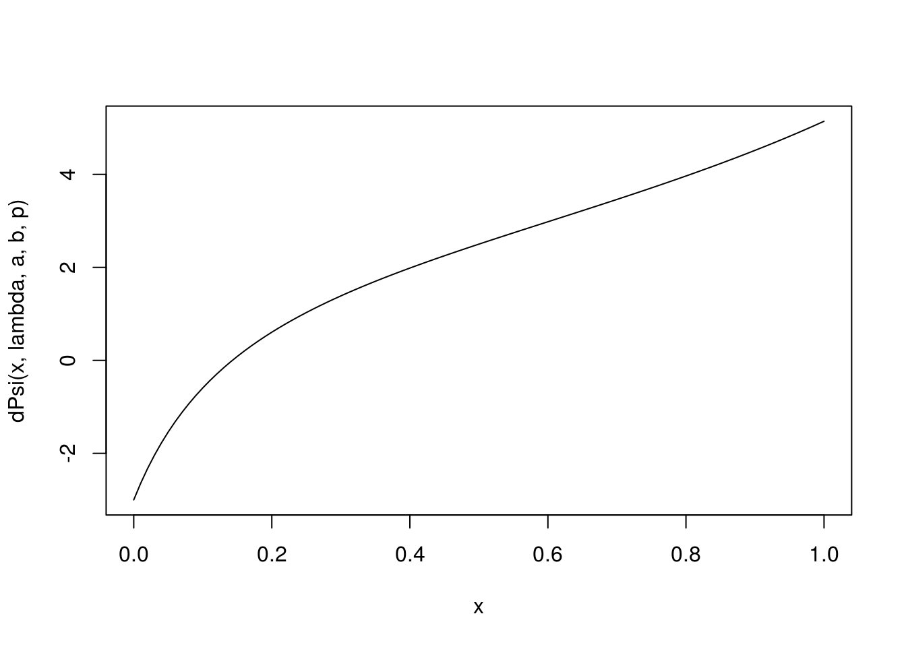

Chapter 7 Monte Carlo Integration
7.1 Introduction
Evaluate integral \[\begin{equation*} E_f[ h(X)] = \int_{\mathcal{X}} h(x) f(x) \mathrm{d}x. \end{equation*}\] If sampling from \(f\) can be done, approximate by sample average \[\begin{equation*} \bar h_n = \frac{1}{n}\sum_{j=1}^n h(X_j), \end{equation*}\] where \(X_1, \ldots, X_n\) are a random sample from \(f\). The convergence is enforced by the SLLN. The speed of the convergence can be assessed if \(E h^2(X) < \infty\) with the CLT.
## 0.8919911 with absolute error < 5.5e-06## Monte Carlo approximation
nrep <- 1000
n <- 10000
## normal sampler
## i.n <- replicate(nrep, sqrt(8 * pi) * mean(log(abs(rnorm(n, -1, 2)))))
i.n <- replicate(nrep, {x <- rnorm(n, -1, 2); mean(f(x) / dnorm(x, -1, 2))})
mean(i.n)## [1] 0.8904976## [1] 0.05637411## cauchy sampler
i.c <- replicate(nrep, {x <- rcauchy(n, -1, 2); mean(f(x) / dcauchy(x, -1, 2))})
mean(i.c)## [1] 0.8929429## [1] 0.06465228The order of the Monte Carlo error is \(\sqrt{\mathrm{Var}[h(X)] / n}\). The error of estimating \(E_f[ h(X)]\) declines at the rate of \(n^{-1/2}\). This is slower than the quadrature method with \(n\) quadrature points, which has a rate of \(O(n^{-k}\) for \(k \ge 2\) typically.
7.2 Option Pricing
blackScholes <- function(strike, time, S0, rfrate, sigma) {
crit <- (log(strike / S0) - (rfrate - sigma^2 / 2) * time)/ sigma / sqrt(time)
S0 * pnorm(sigma * sqrt(time) - crit) -
strike * exp(- rfrate * time) * pnorm(-crit)
}
S0 <- strike <- time <- 1
rfrate <- 0.06
sigma <- 0.1
## analytic solution
blackScholes(strike, time, S0, rfrate, sigma)## [1] 0.07459322## Monte Carlo approximation
myApprox <- function(nsim, strike, time, S0, rfrate, signma) {
wt <- rnorm(nsim, sd = sqrt(time) * sigma)
value <- mean(pmax(S0 * exp((rfrate - sigma^2 / 2) * time + wt) - strike, 0))
exp(-rfrate * time) * value
}
mcAppr <- replicate(nrep, myApprox(n, strike, time, S0, rfrate, sigma))
mean(mcAppr)## [1] 0.0746219## [1] 0.000777726What if the stock price process \(S(t)\) is not a geometric Brownian motion?
7.3 Particle Filtering for State Space Models
Consider a simple state space model \[\begin{eqnarray*} Y_{t} \mid & X_t, & \theta & \sim & N(X_t, & \sigma^2)\\ X_{t} \mid & X_{t-1},& \theta & \sim & N(X_{t-1}, & \tau^2) \end{eqnarray*}\] where \(X_0 \sim N(\mu_0, \sigma^2_0)\) and \(\theta = (\sigma^2, \tau^2)\). This model is also known as a dynamic linear model. The observed data are \(Y_1, \ldots, Y_T\). We would like to predict the hidden states \(X_1, \ldots, X_T\). For this simple normal model, closed form solutions exist but we use SIS for illustration.
First, let’s generate data.
dlmSim <- function(n, sigma, tau, x0) {
x <- rep(0, n)
y <- rep(0, n)
x[1] <- rnorm(1, x0, tau)
y[1] <- rnorm(1, x[1], sigma)
for (t in 2:n) { # loop for clarity; could be vectorized
x[t] <- rnorm(1, x[t-1], tau)
y[t] <- rnorm(1, x[t], sigma)
}
data.frame(y = y, x = x) # save x for comparison purpose
}Let \(\tau^2 = 0.5\) and \(\sigma^2 = 2\tau^2\). Generate a series of length \(n = 50\).
Now we use apply SIS to make inferences about \(X_1, \ldots, X_T\).
dlmSIS <- function(y, sigma, tau, m0, s0, N) {
xseq <- matrix(0, n, N)
x <- rnorm(N, m0, s0)
w <- rep(1/N, N)
for (t in 1:n) {
x <- rnorm(N, x, tau)
w <- w * dnorm(y[t], x, sigma)
xseq[t, ] <- x <- sample(x, size = N, replace = TRUE, prob = w)
}
xseq
}We run this SIS with \(\mu_0 = 0\) and \(\sigma_0 = 10\) with \(N = 1000\) particles. It is easy to see that the particle sample degenerates.
xseq <- dlmSIS(dat$y, sigma, tau, 0, 10, 1000)
summary(apply(xseq, 1, function(x) length(unique(x))))## Min. 1st Qu. Median Mean 3rd Qu. Max.
## 8.00 17.25 23.00 34.22 34.75 194.00plotDlmPf <- function(xseq) {
lower <- apply(xseq, 1, quantile, prob = 0.025)
upper <- apply(xseq, 1, quantile, prob = 0.975)
med <- apply(xseq, 1, median)
plot(dat$x, type = "n", ylim = range(c(dat$x, lower, upper)))
points(dat$x)
lines(med, lty = 1)
lines(lower, lty = 2)
lines(upper, lty = 2)
}
plotDlmPf(xseq)To fight for degeneracy, the sequential importance sampling resampling (SISR), the particles gets updated with uniform weight being the goal.
dlmSISR <- function(y, sigma, tau, m0, s0, N) {
xseq <- matrix(0, n, N)
x <- rnorm(N, m0, s0)
for (t in 1:n) {
x <- rnorm(N, x, tau)
w <- dnorm(y[t], x, sigma)
xseq[t, ] <- x <- sample(x, size = N, replace = TRUE, prob = w)
}
xseq
}We rerun the analysis with SISR with the same data and setting.
xseq <- dlmSISR(dat$y, sigma, tau, 0, 10, 1000)
summary(apply(xseq, 1, function(x) length(unique(x))))## Min. 1st Qu. Median Mean 3rd Qu. Max.
## 173.0 518.2 573.0 530.0 589.0 616.0Another popular algorithm is the auxiliary particle filter algorithm (APF) of Pitt and Shephard (1999a). The APF uses importance sampling similarly to the bootstrap filter but includes an additional ``look-ahead step". At each time point t, the APF calculates first-stage weights \(w_{t|t−1}\) for particles from time \(t − 1\). These weights are calculated using an estimate of the likelihood of the current data given each particle from the previous time point, \(\hat p(y_t \mid x_{t-1})\). Particles with high first-stage weights correspond to values of the latent state at time \(t − 1\) that are likely to generate the observed data at time \(t\). The estimate \(\hat p(y_t | x_{t-1})\) can be approximated by choosing an auxiliary variable \(\tilde x_t | x_{t-1}\) and setting \(\hat p(y_t | x_{t-1}) = g(y_t|\tilde x_{t|t−1})\). Possible methods for choosing \(\tilde x_{t | t - 1}\) include simulating a value from \(f(x_t|x_{t−1})\) or taking \(\tilde x_{t | t - 1} = \mathbb{E}(x_t | x_{t−1})\).
dlmAPF <- function(y, sigma, tau, m0, s0, N) {
xseq <- matrix(0, n, N)
x <- rnorm(N, m0, s0)
for (t in 1:n) {
w0 <- dnorm(y[t], x, sigma)
tilx <- sample(x, size = N, replace = TRUE, prob = w0)
x <- rnorm(N, tilx, tau)
w <- dnorm(y[t], x, sigma) / dnorm(y[t], tilx, sigma)
xseq[t, ] <- x <- sample(x, size = N, replace = TRUE, prob = w)
}
xseq
}
xseq <- dlmAPF(dat$y, sigma, tau, 0, 10, 1000)
summary(apply(xseq, 1, function(x) length(unique(x))))## Min. 1st Qu. Median Mean 3rd Qu. Max.
## 368.0 561.0 593.0 567.6 598.0 614.07.4 Variance Reduction
7.4.1 Importance Sampling
An integral \(\int_a^b H(x) \mathrm{d}x\) is expressed as \[ \mu = \int_a^b h(x) f(x) \mathrm{d}x \] where \(f(x)\) is a density with support \((a, b)\) and \(h(x) = H(x) / f(x)\). An ordinary MC estimator of \(\mu\) is \[ \hat\mu = \frac{1}{n} \sum_{i=1}^n h(Z_i) \] where \(Z_1, \ldots, Z_n\) are a random sample from \(f\).
An importance sampling estimator is \[ \hat\mu = \frac{1}{n} \sum_{i=1}^n \frac{h(X_i)}{g(X_i)} \] where \(X_1, \ldots, X_n\) are a random sample from a density \(g\) whose support is the same as \(f\). This estimator is unbiased with \(\mathbb{E}(\hat\mu) = \mu\), the optimal choice of \(g\) should minimize the variance \(\hat\mu\) or equivalently the second moment of \(\hat\mu\). From Jensen’s inequality \[ \mathbb{E}(\hat\mu^2) \ge \mathbb{E}^2 (\hat\mu) = \mu^2. \] When the equality holds, we have \(\mathrm{Var}(\hat\mu) = 0\). That is the density \(g\) should be chosen such that \(g(x) \propto |h(x)| f(x) = |H(x)|\). The result is slightly irrelevant since \(\int_a^b H(x) \mathrm{d}x\) is exactly what we need to find out the first place. Nonetheless, it implies that the variance of the weighted estimator is lower if \(g(z)\) resembles \(|h(z)| f(z)\), in which case, random points are sampled where they are needed most for accuracy.
For illustration, Consider MC integration of \(\mathbb{E}[ h(X)]\), where \(h(x) = x^\alpha\) and \(X\) is an exponential random variable with mean \(\beta\). The optimal sampler \(g\) should be \(\Gamma(\alpha + 1, \beta)\).
isAppr <- function(n, h, df, dg, rg, ...) {
x <- rg(n, ...)
mean( h(x) * df(x) / dg(x, ...) )
}
alpha <- 3
h <- function(x) x^alpha
beta <- 2
df <- function(x) dexp(x, rate = 1 / beta)
mySummary <- function(nrep, n, h, df, dg, rg) {
## browser()
sim <- replicate(nrep, isAppr(n, h, df, dg, rg))
c(mean = mean(sim), sd = sd(sim))
}
sapply(1:6,
function(shp) {
rg <- function(n) rgamma(n, shape = shp, scale = beta)
dg <- function(x) dgamma(x, shape = shp, scale = beta)
mySummary(100, 1000, h, df, dg, rg)
})## [,1] [,2] [,3] [,4] [,5] [,6]
## mean 47.255131 47.857725 47.9267750 48 48.0636864 47.967139
## sd 6.761963 2.665243 0.8627971 0 0.8602572 1.9858697.4.1.1 Ruin Probability
Consider an insurance company with a reserve \(x > 0\). Suppose that it earns premiums at a constant rate \(p\) per unit time; that the payments \(Y_1, Y_2, \ldots\) for the claims are independent and identically distributed \(\Gamma(\alpha, \beta)\) with mean \(\alpha / \beta\); that on average it receives \(\lambda\) claims per unit time; and that the premiums flow in at a faster rate than claims are paid out, i.e., \(\lambda \mathbb{E}(Y_i) = \lambda\alpha / \beta < p\). Let \(\xi_i\) be the interarrival times,,\(i = 1, 2, \ldots\), which follows an expoential distribution with rate \(\lambda\). Then \[ Z_i = Y_i - p \xi_i \] is the loss during the period from the the \((i-1)\)th claim to the \(i\)th claim and \[ L_n = \sum_{i=1}^n Z_i \] is the total loss by the time of the \(n\)th claim.
Ruin occurs if and only if \(L_n > x\) for some \(n\). Let \(N\) be the first time \(L_n\) passes \(x\). Then the ruin probability is \(\Pr(N < \infty)\). Since \(\mathbb{E}Z_i = \mathbb{E}Y_i - p / \lambda < 0\), by the law of large number \(L_n \to -\infty\) as \(n \to \infty\). Since \(x > 0\), we have \(\Pr(N < \infty) < 1\), or equivalently, \(\Pr(N = \infty) > 0\). A naive way to approximate the ruin probabilty is to simulate the the path of \(L_n\) many times and count how often \(L_n\) passes \(x\). Nonetheless, because \(\Pr(N = \infty) > 0\), how do we get out of the path that has \(N = \infty\)? If we always stop when \(N > M\) for a very large number \(M\), then we would introduce bias into the estimation.
An importance sampler boosts the probability of ruin and guarantees to stop at a finite number of claims. Suppose the density of \(Z_i\)’s is \(f\). Instead of sampling \(Z_i\)’s from \(f\), we sampling \(X_i\)’s from some density \(g\) such that \(\mathbb{E}X_i > 0\) and \(g(x) > 0\) wherever \(f(x) > 0\). By the law of large number \(G_n = \sum_{i=1}^n X_i \to \infty\) with probability one. Therefore, unlike \(L_n\), \(G_n\) is guaranteed to pass \(x\) at a finite \(n\). Let \(\tau\) be the first time \(G_n\) passes \(x\). Then \[ \Pr(N < \infty) = \mathbb{E}[1 \{N < \infty\}] = \mathbb{E}\left[\prod_{i=1}^\tau \frac{f(X_i)}{g(X_i)} 1\{\tau < \infty\}\right]. \] The importance sampling procedure then generate a large number of copies of \[ V_i = \prod_{j=1}^\tau \frac{f(X_j)}{g(X_j)}, \qquad i = 1, \ldots, m, \] and approximate the ruin probability by \(\hat\mu_g = \sum_{i=1}^m V_i / m\).
How to select the importance sampler \(g\)? Note that in this specific example, the density \(f\) of \(Z_i\), the difference between two independent gamma variables, involves an integral which cannot be simplified. If we can construct \(g\) so that it can cancel the density of \(f\), then the evaluation of \(V_i\)’s would be made easier. One such approach is exponential tilting where \[ g(x) = e^{\theta x - \psi(\theta)} f(x), \] where \(\psi(\theta)\) is the cumulant generating function of \(f\), i.e., \[ \psi(\theta) = \log \int e^{\theta x} f(x) \mathrm{d}x. \] In our setting, \(\psi(\theta)\) is known from the moment generating function of \(Z_i\) and \(p \xi_i\). The moment generating function of \(X_i\) also reveals that the distribution of \(X_i\) is the distribution of the difference between a \(\Gamma(\alpha, \beta - \theta)\) variable and an independent exponential variable with rate \(\lambda / p + \theta\). This characterization allows simple simulation of \(X_i\)$’s. With \(\theta\) selected such that \(\mathbb{E}X_i > 0\), we have \[ \Pr(N < \infty) = \mathbb{E}\prod_{i=1}^\tau e^{\psi(\theta) - \theta X_i} = \mathbb{E}e^{- \theta G_{\tau} + \psi(\theta)\tau}. \]
We can further choose \(\theta\) as the unique positive root \(\theta^*\) to \(\psi(\theta) = 0\). The existence and uniqueness of \(\theta^*\) is due to the strictly convexity of \(\psi(\theta)\), \(\psi(0) = 0\), \(\psi'(0) = \mathbb{E}Z_i < 0\), and \(\psi(\theta) \to \infty\) as \(\theta \to \infty\). Then \[ \Pr(N < \infty) = e^{\theta^* x} \mathbb{E}e^{ - \theta^* (G_\tau - x)}, \] where \(G_\tau - x\) is the amount of the “overshoot” when \(G_\tau\) first passes \(x\).
The sampling from the importance sampler is simple from the moment generating function of \(X_i\).
#' Importance sampler with exponeitial tilting
#' $X_i = U_i - V_i$ where
#' $U_i$ is gamma(a, b - theta) and $V_i$ is an independent exponential
#' with rate lambda / p + theta
#' Theta needs to be selected such that E X > 0
rX <- function(n, theta, lambda, a, b, p) {
rgamma(n, a, rate = b - theta) - rexp(n, rate = lambda / p + theta)
}Now we set some parameter values and plot the \(psi\) function.
x <- 2 # reserve
lambda <- 1; a <- 6; b <- 2; p <- 6 # such that a / b - p / lambda < 0
#' $Z_i = Y_i - p \xi_i$ such that E[Z_i] < 0
#' where $Y_i$ is Gamma(a, b) with mean a/b,
#' $\xi_i$ is exponential with rate lambda.
#' The cumulant generating function of Z as a function of theta
psiExpr <- expression(- a * log(1 - t / b) - log(1 + t / lambda * p))
dPsiExpr <- D(psiExpr, "t")
psi <- function(t, lambda, a, b, p) {
eval( psiExpr, list(t = t, lambda = lambda, a = a, b = b, p = p))
}
dPsi <- function(t, lambda, a, b, p) {
eval(dPsiExpr, list(t = t, lambda = lambda, a = a, b = b, p = p))
}
curve( psi(x, lambda, a, b, p), 0, 1)
## root of psi(theta) = 0
(th0 <- uniroot( psi, c(0.01, 1), lambda = lambda, a = a, b = b, p = p)$root)## [1] 0.3362335## root of dPsi(theta) = 0
(thd0 <- uniroot(dPsi, c(0.01, 1), lambda = lambda, a = a, b = b, p = p)$root)## [1] 0.1428567The importance sampling approximation is made more efficient in R by sampling in batches.
## approximation with importance sampler
ruinProbAppr <- function(n, lambda, a, b, p, x, theta,
batSize = 1000){
do1rep <- function() {
lossCum <- 0
tau <- 0
repeat {
z <- rX(batSize, theta, lambda, a, b, p)
loss <- lossCum + cumsum(z)
idx <- which(loss > x)
if (length(idx) > 0) break
lossCum <- loss[batSize]
tau <- tau + batSize
}
lossCum <- loss[idx[1]]
tau <- tau + idx[1]
lr <- exp(- theta * lossCum + tau * psi(theta, lambda, a, b, p))
}
sim <- replicate(n, do1rep())
mean(sim)
}Now we compare the performance at several values of \(\theta\).
## Compare different theta values
theta <- c(mean(c(thd0, th0)), (1:2) * th0)
nrep <- 50
n <- 200
sim <- sapply(theta,
function(th) {
srep <- replicate(nrep, ruinProbAppr(n, lambda, a, b, p, x, th))
c(mean = mean(srep), sd = sd(srep))
})
sim## [,1] [,2] [,3]
## mean 0.312298954 0.310416606 0.30850139
## sd 0.009255797 0.008025985 0.063208387.4.2 Control Variates
Suppose that there is another MC estimator \[ \hat\theta = \frac{1}{n}\sum_{i=1}^n g(Y_i) \] whose target \(\theta\) is known. If \(h(X_i)\) and \(g(Y_i)\) are positively correlated, their dependence can be exploited to construct an improved MC estimator for \(\mu\). The intuition is that if \(\hat\theta\) is overestimating (underestimating) \(\theta\), it is likely that \(\hat\mu\) is also overestimating (underestimating) \(\mu\). The known bias in \(\hat\theta\) can be used to adjust \(\hat\mu\). The random variable on which \(\hat\theta\) is based is called a control variate in estimating \(\mu\). Specifically, the control variate MC estimator for \(\mu\) is \[ \hat\mu_{\mbox{CV}} = \hat\mu - b (\hat\theta - \theta) \] where \(b\) is constant designed to minimize the variance of \(\hat\mu_{\mbox{CV}}\).
Clearly, \(\hat\mu_{\mbox{CV}}\) is unbiased and consistent. It reduces to \(\hat\mu\) when \(b = 0\). Given \(g\) and the distribution of \(Y_i\), \[ \mathrm{Var}(\hat\mu_{\mbox{CV}}) = \mathrm{Var}(\hat\mu) + \mathrm{Var}(\hat\theta) - 2 \mathrm{Cov}(\hat\mu, \hat\theta). \] The optimal \(b\) that minimizes \(\mathrm{Var}(\hat\mu_{\mbox{CV}})\) is \[ b_{\mbox{opt}} = \frac{\mathrm{Cov}(\hat\mu, \hat\theta)}{\mathrm{Var}(\hat\mu)} = \frac{\mathrm{Cov}[h(X), g(Y)]}{\mathrm{Var}[g(Y)]}. \] The minimized variance is \[ \mathrm{Var}(\hat\mu_{\mbox{CV}}) = (1 - \rho^2) \mathrm{Var}(\hat\mu) \] where \(\rho\) is the correlation between \(h(X)\) and \(g(Y)\). In practice, the covariance and variance in the equations are unknown but can be estimated by the their sample version based on the MC sample of \(X\) and \(Y\).
To select a control variate \(g(Y)\), we need that \(E[g(Y)]\) is known and that the correlation between \(h(X)\) and \(g(Y)\) is strong. When \(\rho = 1\), we have \(\mathrm{Var}(\hat\mu_{\mbox{CV}}) = 0\). This is not a surprise because in that case \(h(X)\) is a linear transformation of \(g(Y)\) and \(\mu\) is a linear transformation of \(\theta\).
Consider pricing an Asian call option; Example 4.1.2 in Glasserman (2000, p.189). For MC integration, sample paths of BM will be needed.
rBM <- function(n, tgrid, sigma) {
tt <- c(0, tgrid)
dt <- diff(tt)
nt <- length(tgrid)
dw <- matrix(rnorm(n * nt, sd = sigma * sqrt(dt)), n, nt, byrow = TRUE)
t(apply(dw, 1, cumsum))
}If the value the underlying asset at maturity follows a lognormal distribution, then the expected value of a European call option has a closed-form.
callValLognorm <- function(S0, K, mu, sigma) {
d <- (log(S0 / K) + mu + sigma^2) / sigma
S0 * exp(mu + 0.5 * sigma^2) * pnorm(d) - K * pnorm(d - sigma)
}We now approximate the present value of an Asian call option. The first estimator is a simple MC estimator, which will be compared with three control variate MC estimator. The three control variates are, respectively, the underlying asset, a standard European call option, and an Asian call option but defined with geometric mean instead of arithmetic mean.
optValueAppr <- function(n, r, sigma, S0, K, tgrid) {
wt <- rBM(n, tgrid, sigma)
## payoff of call option on arithmetic average
nt <- length(tgrid)
TT <- tgrid[nt]
St <- S0 * exp((r - sigma^2 / 2) * matrix(tgrid, n, nt, byrow = TRUE) + wt)
pAri <- pmax(rowMeans(St) - K, 0)
vAri <- mean(pAri)
## underlying asset price
ST <- St[, nt]
vAs <- vAri - cov(ST, pAri) / var(ST) * (mean(ST) - exp(r * TT) * S0)
## value of standard option
pStd <- pmax(ST - K, 0)
pStdTrue <- callValLognorm(S0, K, (r - 0.5 * sigma^2) * TT,
sigma * sqrt(TT))
vStd <- vAri - cov(pStd, pAri) / var(pStd) * (mean(pStd) - pStdTrue)
## payoff of call option on geometric average
pGeo <- pmax(exp(rowMeans(log(St))) - K, 0)
tbar <- mean(tgrid)
sBar2 <- sigma^2 / nt^2 / tbar * sum( (2 * seq(nt) - 1) * rev(tgrid) )
pGeoTrue <- callValLognorm(S0, K, (r - 0.5 * sigma^2) * tbar,
sqrt(sBar2 * tbar))
vGeo <- vAri - cov(pGeo, pAri) / var(pGeo) * (mean(pGeo) - pGeoTrue)
## sim <- data.frame(pAri, ST, pStd, pGeo)
## result
c(vAri, vAs, vStd, vGeo) * exp(-r * TT)
}We run 200 replicates, each with a sample size of 500, and compare the results
r <- 0.05; sigma <- 0.3; S0 <- 50; K <- 50
tgrid <- seq(0, .25, length = 14)[-1]
sim <- replicate(200, optValueAppr(500, r, sigma, S0, K, tgrid))
apply(sim, 1, mean)## [1] 1.992368 1.976591 1.977684 1.982716## [1] 0.133252648 0.081312123 0.071635329 0.002713132The standard error using the geometric mean Asian option is strikingly small compared the first version. This is due to the strong correlation between the arithmetic mean Asian option and geometric mean Asian option.
7.4.3 Antithetic Variates
Approximate the mean of \(X^2\) where \(X\) follows the \(N(0, 1)\) distribution.
myApprox <- function(n) {
## basic MC
z <- rnorm(n)
mu1 <- mean(z^2)
## antithetic variate 1 ## no reduction in variance
za <- -z
mu2 <- mean(c(mean(z^2), mean(za^2)))
## antithetic variate 2
y <- qchisq(pnorm(z ), df = 1)
ya <- qchisq(pnorm(za), df = 1)
mu3 <- mean(c(mean(y), mean(ya)))
c(mu1, mu2, mu3)
}
nrep <- 200; n <- 100
sim <- replicate(nrep, myApprox(n))
apply(sim, 1, mean)## [1] 1.001890 1.001890 1.001171## [1] 0.1262916 0.1262916 0.06692187.4.4 Stratified Sampling
#' X ~ Lognormal(0, 1)
#' Y | X ~ lognormal(9 + 3 log X, 1)
#' Find E(Y / X)
myraoblack <- function(n) {
x <- rlnorm(n, 0, 1)
y <- rlnorm(n, 9 + 3 * log(x), 1)
## vanilla version
v1 <- mean(y / x)
## Rao-Blackwell version
y.x <- exp(9 + 3 * log(x) + 1 / 2)
v2 <- mean(y.x / x)
c(v1, v2)
}
sim <- replicate(200, myraoblack(5000))
apply(sim, 1, mean)## [1] 99429.09 97898.69## [1] 35376.27 9270.43#' @title Generating multivariate normal subject to linear constraint
#' @param U a vector of U(0, 1) random variables
#' @param Sigma variance matrix
#' @param nu vector for the linear projection
rmvnormLinCon <- function(U, Sigma, nu) {
## normalize nu such that nu' %*% Sigma %*% nu == 1
nu <- nu / sqrt(c(crossprod(nu, Sigma %*% nu)))
n <- length(U); p <- length(nu)
## convert the conditioning U to standard normal scale
X <- qnorm(U)
## standard N(0, I_p)
Z <- matrix(rnorm(n * p), p, n)
## lower-triang matrix of Cholesky decomposition of Sigma
A <- t(chol(Sigma))
## conditional sampling
cmean <- tcrossprod(Sigma %*% nu, X) # a pxn matrix for mean
xi <- cmean + (A - Sigma %*% nu %*% crossprod(nu, A)) %*% Z
t(xi) # a nxp matrix
}
optValueSS <- function(n, r, sigma, S0, K, tgrid, nstrata = 10) {
nt <- length(tgrid)
Sigma <- sigma^2 * outer(tgrid, tgrid, pmin)
nu <- rep(1, nt) / nt
## unstratified version
U <- runif(n)
Wt <- rmvnormLinCon(U, Sigma, nu)
St <- S0 * exp((r - sigma^2 / 2) * matrix(tgrid, n, nt, byrow = TRUE)
+ Wt)
pAri <- pmax(rowMeans(St) - K, 0)
vAri <- mean(pAri)
## stratified version
left <- rep(seq(nstrata) - 1, each = n / nstrata)
V <- (left + U) / nstrata # stratified based on U
Wt.s <- rmvnormLinCon(V, Sigma, nu)
St.s <- S0 * exp((r - sigma^2 / 2) * matrix(tgrid, n, nt, byrow = TRUE)
+ Wt.s)
pAri.s <- pmax(rowMeans(St.s) - K, 0)
vAri.s <- mean(pAri.s)
c(vAri, vAri.s)
}
r <- 0.05; sigma <- 0.3; S0 <- 50; K <- 50
tgrid <- seq(0, .25, length = 14)[-1]
sim <- replicate(200, optValueSS(500, r, sigma, S0, K, tgrid))
apply(sim, 1, mean)## [1] 1.988077 2.007031## [1] 0.1262231 0.03579467.5 Exercises
- Suppose \(X\) has the following probability density function
\[
f(x) = \frac{1}{5\sqrt{2\pi}}x^2 e^{-\frac{(x-2)^2}{2}}, \qquad -\infty <x < \infty.
\]
Consider using the importance sampling method to estimate \(\mathbb{E}(X^2)\).
- Implement the important sampling method, with \(g(x)\) being the standard normal density. Report your estimates using 1000, 10000 and 50000 samples. Also estimate the variances of the estimates.
- Design a better importance sampling method to estimate \(\mathbb{E}(X^2)\) using a different \(g(x)\). Justify your choice of \(g(x)\).
- Implement your method and estimate \(\mathbb{E}(X^2)\) using using 1000, 10000 and 50000 samples. Also estimate the variances of the importance sampling estimates.
- Compare the two results from the two methods and comment.
- Consider a geometric Brownian motion
\[\begin{align*}
\frac{\mathrm{d}S(t)}{S(t)} = r\,\mathrm{d}t + \sigma\,\mathrm{d}W(t).
\end{align*}\]
Let \(P_A = e^{-rT}(S_A-K)_+\), \(P_E = e^{-rT}[S(T)-K]_+\), and \(P_G = e^{-rT}[S_G-K]_+\), where
\[\begin{align*}
S_A = \frac{1}{n} \sum_{i=1}^n S\left(\frac{iT}{n}\right),
\quad
S_G = \left[\prod_{i=1}^n S\left(\frac{iT}{n}\right)\right]^{1/n}.
\end{align*}\]
In all the questions below, \(S(0)=1\), \(r=0.05\), and \(n=12\).
- Write down and implement an algorithm to sample the path of \(S(t)\).
- Set \(\sigma=0.5\) and \(T=1\). For each of the values of \(K \in \{1.1, 1.2, 1.3, 1.4, 1.5\}\), simulate 5000 sample paths of \(S(t)\) to get MC estimates of the correlation coefficients between \(P_A\) and \(S(T)\), between \(P_A\) and \(P_E\), and between \(P_A\) and \(P_G\). How do the correlation coefficients change as \(K\) increases?
- Set \(T=1\) and \(K=1.5\). For each of the values of \(\sigma \in \{0.2, 0.3, 0.4, 0.5\}\), simulate 5000 sample paths of \(S(t)\) to get MC estimates of the correlation coefficients. How do the correlation coefficients change as \(\sigma\) increases?
- Set \(\sigma=0.5\) and \(K=1.5\). For each of the values of \(T \in \{0.4, 0.7, 1, 1.3, 1.6\}\), use 5000 sample paths of \(S(t)\) to get MC estimates of the correlation coefficients. How do the correlation coefficients change as \(T\) increases?
- Set \(\sigma=0.4\), \(T=1\) and \(K=1.5\). Use \(P_G\) as a control variate to develop a control variate MC estimator for \(\mathbb{E}(P_A)\). Compare its SD with the SD of the MC estimator for \(\mathbb{E}(P_A)\) that has no control variate.